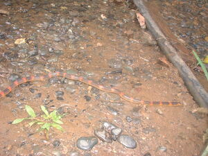

lesek 
/lɔsɔk/
1.
n.
a small type of snake which is colorful; venomous
Ka lesek sabeka ne kalasihan te uled ne mabatek, duè batek din ne meitum, malalab, meilem, wey, makalawag. Mehilut nu ne egkakita seeni diyè te diralem te tanè su egpangikul-ikul te lungag ne dereisek.
Nakakali à te uled ne lesek diyè te lungag te ambew ne amana ne mabatek.
I've been dug a colorful snake in the hole of rat.
Eng. snake variety
OCM: Fauna (136)
DDP: Snake (1.6.1.3.1)
Online dict status: -
Usage level: R
v.
for something (eglelesek, miglelesek/inlelesek, theme, eg><ø-rdpCV-) to be like a color as lesek snake
Eng. color
Online dict status: -
Usage level: R
2.
adj.
(malesek, mA1-) hard to find
Eng. find, hard to
Online dict status: -
Usage level: M
3.
v.
for someone (eglesek, miglesek/inlesek, agent, eg><ø-) to put something inside (iglesek, inlesek, instrument, ig><ø-) (e.g., pocket or under something) (eglesekan, inlesekan/miglesekan/piglesekan, patient, eg><an-)
Eng. put, to
Online dict status: -
Usage level: M
Updated by: QDL,RJH,QDL
Last updated: 28/Jan/2010
This page last updated: 19/May/2012
Copyright © 2009-2010, Matigsalug Language Christian Association, Inc